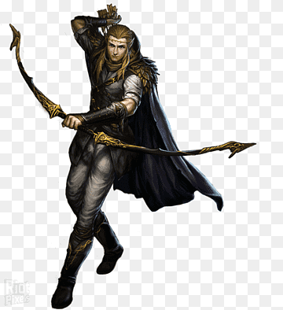

Kimble Mulu
Druida ForasteiroSe um dia você puder ter a experiência de estar numa floresta em ambientes frios e longe de civilizações, talvez você possa se sentir observado. É assim qu se sentiram orcs, piratas, bandidos ou alguns lenhadores quando, com intenção de fazer mal, tentaram penetrar as florestas dominadas por Kimble. Kimble é sobretudo um guardião. Por vontade da natureza, ele se mostra um elfo que melhor do que qualquer um possui sentido aguçado e consegue detectar movimentos nas florestas como aranhas sentem suas presas se enroscarem numa teia. Dotado de sabedoria das bibliotecas élficas, de coragem por sua mãe Theodora que lhe mostrou os caminhos e de habilidade pelo prazer em se arriscar que sempre teve, Kimble se tornou um herói das matas mais frias dos mundos. Protegendo-as, convivendo com as árvores e animais, até se tornar parte da natureza, o elfo é em algumas histórias aliado dos deuses e semideuses por não possuir nenhuma ambição senão cuidar de sua vida e das florestas, embora posssua tanto poder e sabedoria.

Kimble Mulu
"Saúde, estou contente em te ver novamente">
"Estamos passando por tempos sombrios amigo, mantenhamos a força"
"Tudo possui bem e mal, a chave é o equilíbrio"